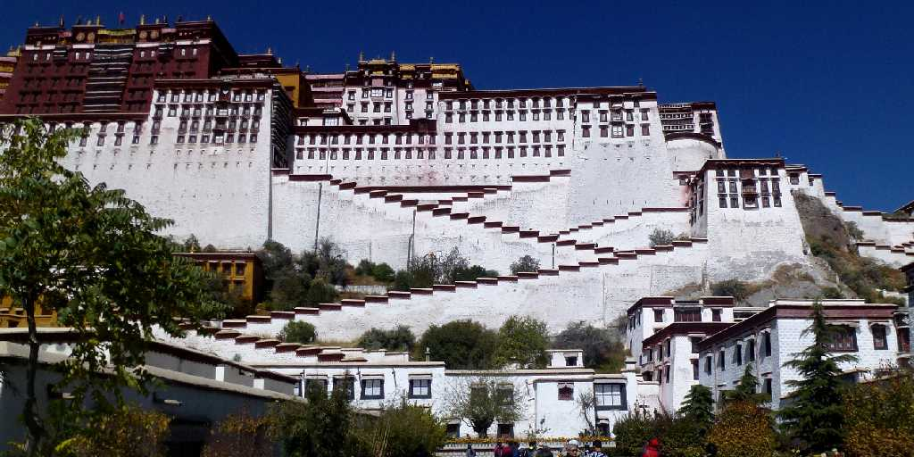
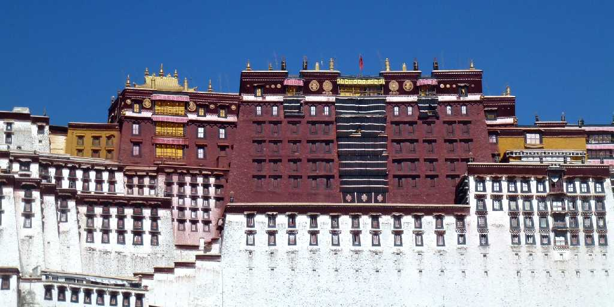
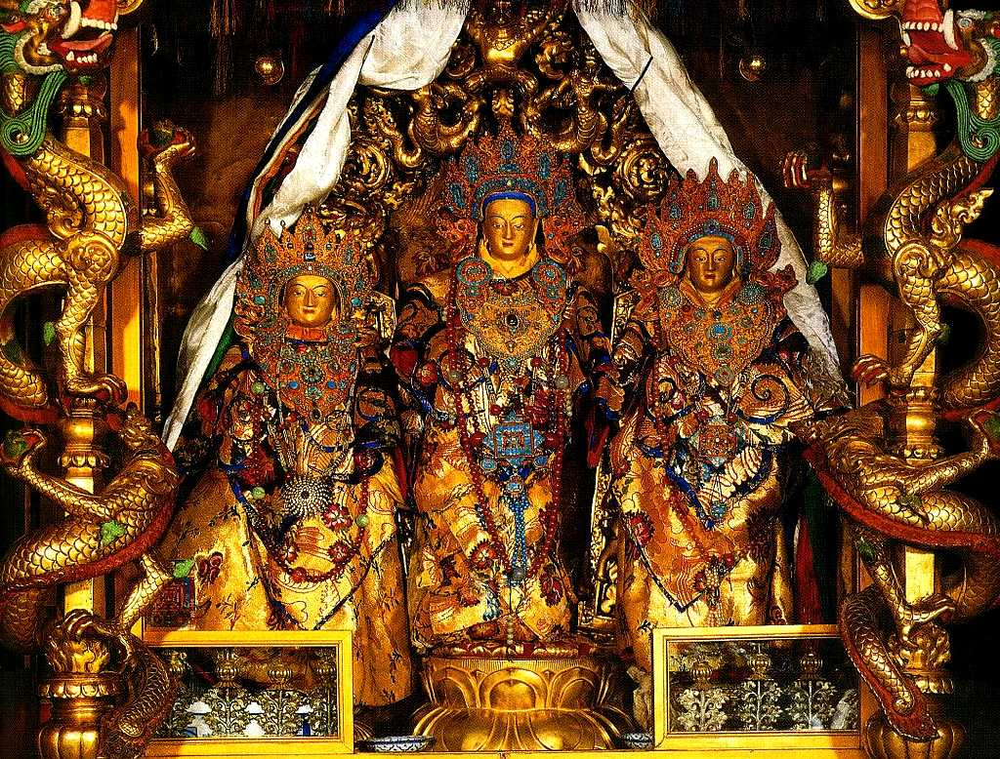
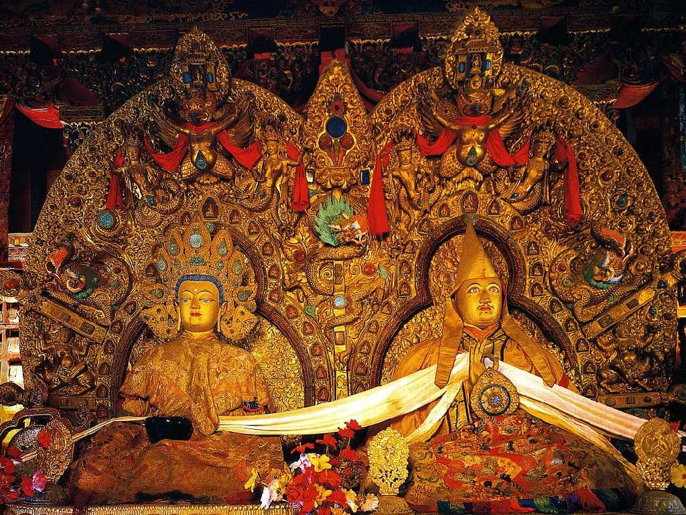
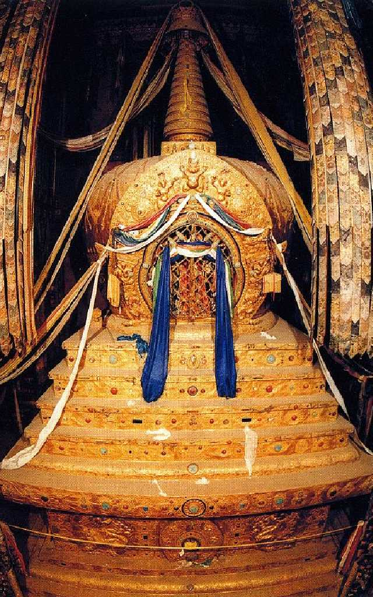
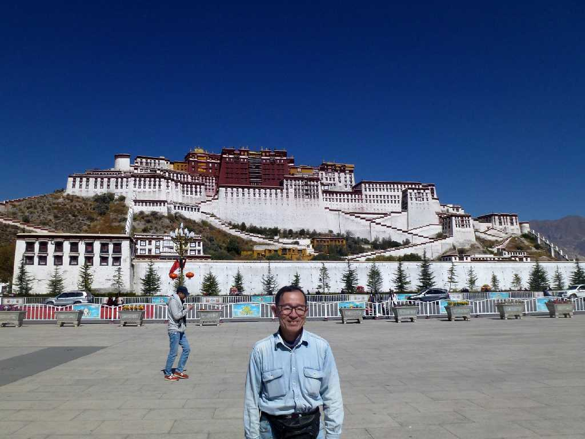
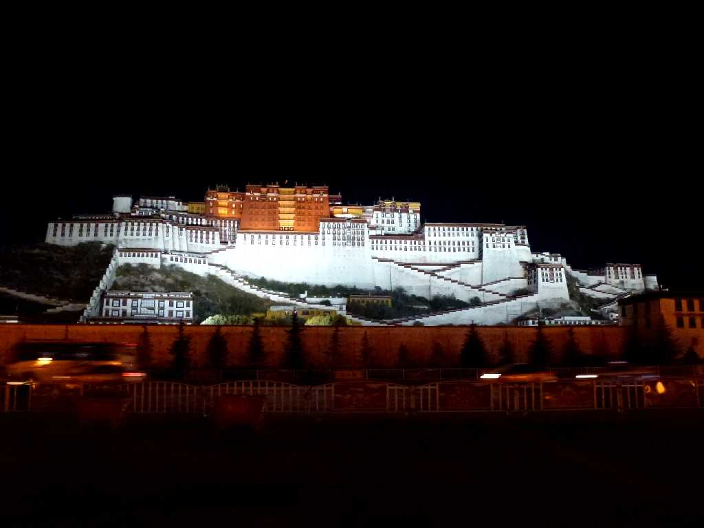

Potala Palace Lhasa Tibet 西藏 拉萨 布达拉宫
チベットの象徴と云われるポタラ宮 ポタラとは観音菩薩が住む地を意味しダライラマとはこの観音菩薩を意味する ポタラ宮は右側の白宮と云われる政治を司る区域と左側の紅色の紅宮と云われる霊廟と寺院の区域からなっている

Potala White Palace
７世紀にチベット初の統一王国を樹立し仏教を導入したソンツェン･ガンポ王がマルポリの丘に創った宮殿を１７世紀にダライラマ５世が増設した

Potala Red Palace

Avalokitesvara Potala Palace 帕巴拉康观音像

Shakyamuni and Dalai Lama 5th Potala Palace 释迦牟尼像 达赖拉玛五世
釈迦牟尼菩薩とダライラマ５世

Funerary Chorten Dalai Lama 5th Potala Palace 达赖拉玛五世 葬礼宝塔
ダライラマ５世の廟にある葬儀の仏塔

October 20 2014 Potala Palace

Night View Potala Palace